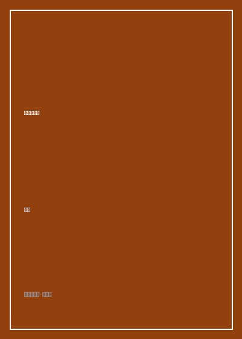

《可能的世界》

总体观点
二十世纪中东欧历史是人类现代文明经历的最惨烈震荡。极权主义的铁幕与战争废墟不仅摧毁了城市建筑，更在几代知识分子的灵魂深处留下了不可磨灭的精神创伤与撕裂。
作者拒绝宏大史诗的简单道德化叙事，而是以极其敏锐温厚的身体行走与文献打捞，还原茨威格、本雅明、阿伦特、哈维尔等具体思想者在历史十字路口的犹豫、恐惧与坚守。
即便在至暗时刻，微小个体的诚实表达、地下沙龙的低语与对自由的顽强想象，依然为后世保留了超越绝望的火种，构筑起抵抗历史虚无主义的精神堤坝。
核心观点
-
1. 地理漫游作为思想考古：用肉身触碰历史创伤的年轮
历史不在抽象的概念教科书里，而在柏林墙遗址下的碎石、维也纳咖啡馆被烟熏黄的墙壁和布拉格查理大桥的风声中。
作者站在维也纳中央车站站台，对照茨威格自传回忆当年一列列载满流亡者的末班火车，感受文明熄灭瞬间的彻骨寒意。 -
2. 知识分子的流亡困境：失去母语土壤的精神放逐
肉体逃离集中营往往只是流亡苦难的序幕，失去母语听众、失去文化认同与被寄居国视为外来疑犯，往往造成更深的精神窒息。
本雅明在法西边境小镇波特沃因绝望服毒自尽，皮箱里珍藏的手稿与未竟的《拱廊计划》成为世纪流亡者的无字墓碑。 -
3. 地下沙龙与厨房哲学：平行城邦里的良知避难所
在官方意识形态笼罩一切的岁月里，平民在逼仄厨房与私人地下客厅里朗读诗歌、交流禁书，构筑起真实的公民社会雏形。
七十年代布拉格知识分子在破旧公寓里举办家庭摇滚音乐会与哲学讲座，催生出影响深远的'生活在真实中'理念。 -
4. 日常细节的抵抗力：拒绝被宏大历史剥夺生活质感
极权体制最深重的毒害是迫使所有人进入政治狂热，而对一杯好咖啡、一束鲜花、一段悠闲散步的执着，是守护人性的天然盾牌。
冷战时期柏林市民在封锁与配给制重压下，依然在周末阳台上精心照料天竺葵，维系体面而平静的生活尊严。 -
5. 可能的世界的意义：在绝望深处守护希望的缝隙
现实世界往往逼仄而残酷，但只要人类心智依然能够想象'事情原本可以不同'，未来的道路就永远不会被彻底焊死。
哈维尔在狱中给妻子写下长信，在看似毫无胜算的严酷刑期里深入思索欧洲文明重获生机的道德起点。
全书结构
-
第一章 维也纳的黄昏：昨日世界的迷醉与崩塌
走访奥匈帝国衰亡前夕的维也纳，追溯茨威格、马勒与弗洛伊德笔下那个辉煌典雅却危机四伏的欧洲黄金时代。
在中央咖啡馆的木椅上翻阅旧报纸，还原青年知识分子在华尔兹舞曲声中对迫在眉睫的法西斯狂潮的集体盲视。 -
第二章 柏林的伤口：冷战断层线上的遗忘与记忆
穿梭于东柏林斯塔西秘密警察总部与西柏林繁华大街之间，探讨一座被混凝土墙撕裂三十载的都市的心理愈合过程。
解剖两德统一后原东德市民在档案解密日直面身边至亲好友竟然是告密线人的巨大伦理震荡与和解之难。 -
第三章 布拉格的春天：瓦茨拉夫广场上的低语与呐喊
重访1968年布拉格之春与八十年代天鹅绒巨变现场，讲述剧作家、哲学家如何以无权者的权力撬动庞大机器。
走访查理大学旧教室，采访当年参与地下手抄本传递的老学者，还原被禁小说如何借助打字机蓝复写纸在全城流传。 -
第四章 巴黎的异乡人：拉美与东欧流亡者的精神寓所
漫步塞纳河左岸拉丁区，探访米兰·昆德拉、切斯瓦夫·米沃什等流亡作家在法兰西土地上的格格不入与精神重构。
对比昆德拉在巴黎改用法语写作引发的母国指责，剖析流亡作家在文化双重身份撕裂中的孤独执拗。 -
第五章 边境小镇的沉思：在本雅明墓前的长考
来到比利牛斯山脚下的西法边境小镇，祭拜瓦尔特·本雅明衣冠冢，反思逃亡通道关闭时历史天使的凝望。
在悬崖边面对浩瀚地中海波涛，作者思考本雅明关于'每一个当下都包含着弥赛亚微小救赎门扉'的历史哲学命题。 -
结语：在历史的废墟中重新学会看见
总结全书漫游心路，阐明非虚构写作在当下时代对抗冷漠与仇恨的核心价值——守护对多重可能性的敬畏与同理心。
回程航班俯瞰欧亚大陆交界的夜景灯火，作者写下'世界并未终结，只要我们依然愿意彼此倾听与行走'。